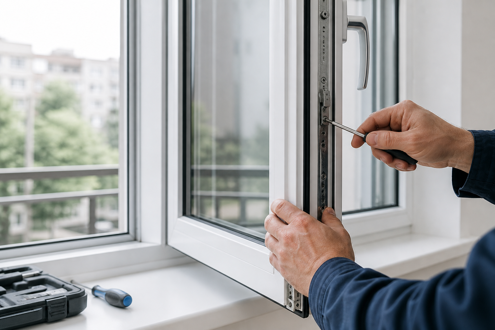
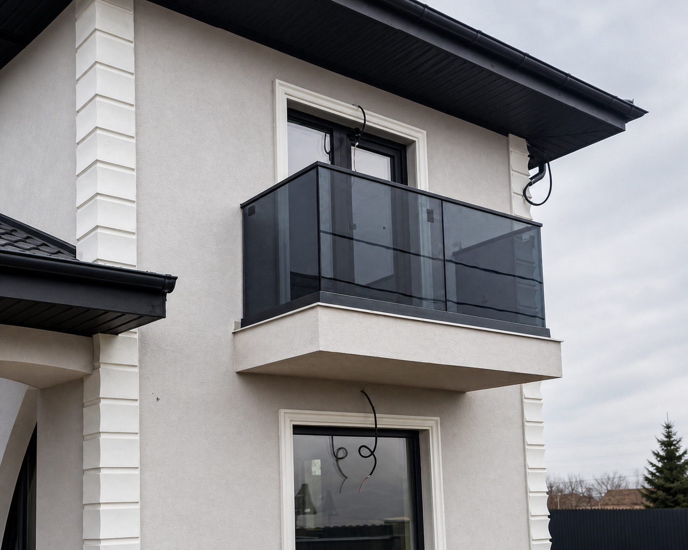

Geam sau ușă lăsată
Reglaje, balamale, feronerie, închidere grea sau garnituri care nu mai etanșează.
Intervenții rapide pentru ferestre, uși, rulouri, yale și uși de garaj. Lucrări făcute corect de Mihai Iftimovici, meseriaș cu peste 30 de ani experiență.

Clientul sună de obicei când ceva nu se mai închide, nu mai culisează sau nu mai ține. Aici intră cel mai bine experiența de service.
Reglaje, balamale, feronerie, închidere grea sau garnituri care nu mai etanșează.
Schimbare yale, mânere, cilindri, încuietori și service pentru uși de toate felurile.
Service pentru rulouri exterioare manuale sau automate, inclusiv reglaje și reparații.
Reparații, montaj și automatizări pentru uși de garaj normale sau automate.
MIFT Service Tâmplărie lucrează cu diverși producători și poate acoperi atât lucrări noi, cât mai ales intervențiile care prelungesc viața tâmplăriei existente.
Confecționare, montaj, reglaje și service pentru ferestre și uși.
Schimbare yale, mânere, broaște, balamale și intervenții pentru uși interioare sau exterioare.
Rulouri exterioare manuale sau automate, uși de garaj normale sau automatizate.
Soluții pentru balcoane și terase, cu montaj curat și finisaj atent.

În județul Iași, transportul este gratuit. Pentru restul țării, costul transportului se calculează în funcție de distanță și de lucrare.
Numele firmei rămâne în față, dar încrederea vine și din omul cunoscut pentru lucrări serioase. Mihai Iftimovici are peste 30 de ani în industria tâmplăriei PVC și aluminiu, de la confecționare până la service și reglaje fine.
Trimite câteva detalii despre problemă. Pentru urgențe, cel mai rapid este apelul direct la 0742513255.